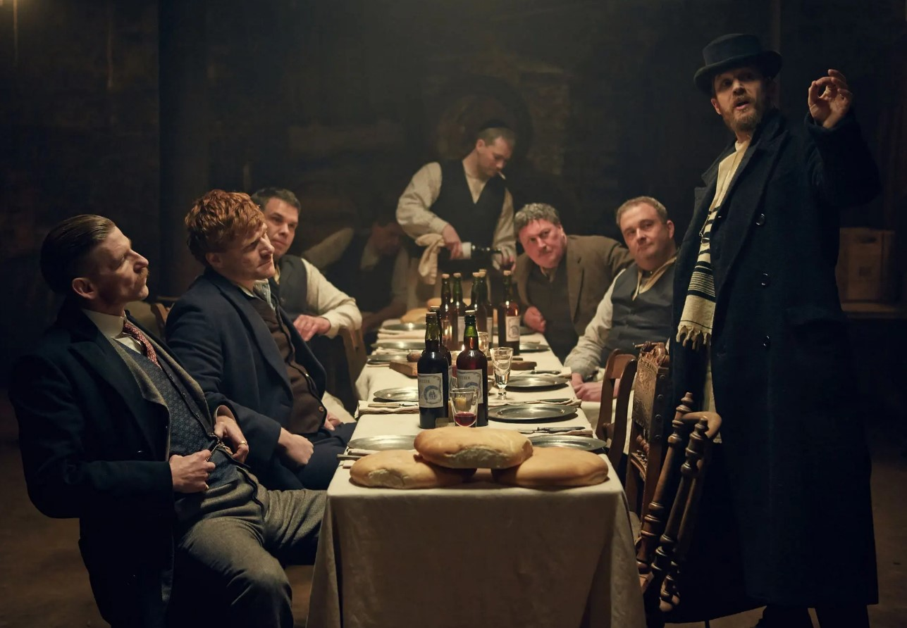
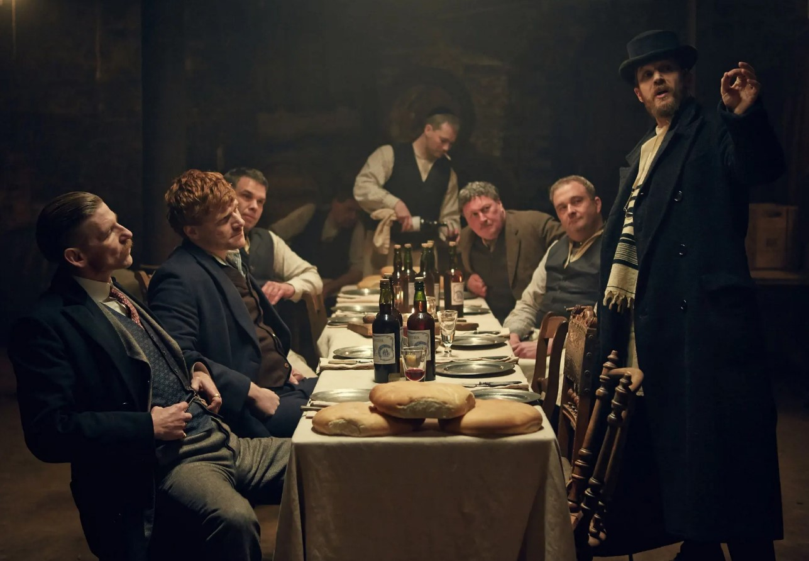

Rain Makes Corn, Corn Makes Whiskey
Whiskey
Prohibition in America
In an effort to combat social
issues, such as domestic violence and child abandonment, the
United States passed legislation that made the production,
distribution, and sale of alcoholic beverages illegal. Any drink
that contained more than one half of one percent of alcohol was
considered to be an intoxicating beverage. This dry period in
American history is known as the prohibition era.
Although the intentions of lawmakers at the time were 'noble and true', the unintended consequences of the law were anything but that. It was thought that prices for clothing and household goods would rise, rents would increase, and other entertainment industries would see an increase in profits. This was not the case, as the economy instead took a turn for the worst. Before prohibition, many states relied heavily on liquor sales tax as a source of revenue. But once the Volstead Act went into effect, that source of revenue vanished instantly.
The most infamous unintended consequence of prohibition was that it set the foundation for organized crime in America. Mobsters, bootleggers, and savvy businessmen alike all saw the prohibition laws as a lucrative opportunity to increase their wealth and influence. It is rumored that Joe Kennedy, JFK's father, was a bootlegger during the 1920's and had connections to individuals in the mob.
Although the intentions of lawmakers at the time were 'noble and true', the unintended consequences of the law were anything but that. It was thought that prices for clothing and household goods would rise, rents would increase, and other entertainment industries would see an increase in profits. This was not the case, as the economy instead took a turn for the worst. Before prohibition, many states relied heavily on liquor sales tax as a source of revenue. But once the Volstead Act went into effect, that source of revenue vanished instantly.
The most infamous unintended consequence of prohibition was that it set the foundation for organized crime in America. Mobsters, bootleggers, and savvy businessmen alike all saw the prohibition laws as a lucrative opportunity to increase their wealth and influence. It is rumored that Joe Kennedy, JFK's father, was a bootlegger during the 1920's and had connections to individuals in the mob.
History of Whiskey
The term whiskey (or whisky) is an
anglicized version of an old Gaelic term uisce (or
usige beatha). This term in itself is a translation of the Latin
term aqua vitae. Traveling monks are credited with
bringing distillation techniques from the European mainland over
to Scotland and Ireland. The first written record of whiskey
occurred in 1405. Whiskey was first introduced to America in the
1600's, as many Irish and Scottish immigrants brought along
their distillation techniques.
Types of Whiskey
-
Geographic
- Irish whiskey
- Scotch Whisky
- American Whiskey
- Japanese Whisky
- Tennessee Whiskey
- Corn Whiskey
- Malt Whiskey
- Single Barrel Whiskey
Countries known for production of quality whiskey
Production
Different ingredients or regulations for the whiskey produced
Art of Mixology
There was a time when being a
bartender was frowned upon by society. It took the efforts of
early pioneers, such as Jerry Thomas, to change the public
sentiment on bartenders. Bartenders are commonly referred to as
mixologists, but it is important to understand the distinction
between the two. A professional bartender should have in depth
knowledge of the origin, physical characteristics, taste, and
production of various alcohols. They are responsible for using
this information to provide great services to their patrons.
Mixology, on the other hand, focuses on creating new or unique
cocktails. There are four components to a cocktail: the spirit,
the acid, the base, and the garnish.
Alcohol Abuse and Health Concerns
If you or anyone you know is
struggling with alcohol abuse, just know that there is help out
there for you. You are not alone, and there are people who will
gladly offer their assistance. Groups such as
Alcohol Anonymous
were created to help those struggling with alcohol abuse and
recovery.
Also, there are many health concerns to consider when consuming alcohol. Alcohol has been shown to impact the brain, heart, liver, pancreas, and immune system. Women also risk giving birth to a child with defects if they consume alcohol while pregnant.
Also, there are many health concerns to consider when consuming alcohol. Alcohol has been shown to impact the brain, heart, liver, pancreas, and immune system. Women also risk giving birth to a child with defects if they consume alcohol while pregnant.

 
